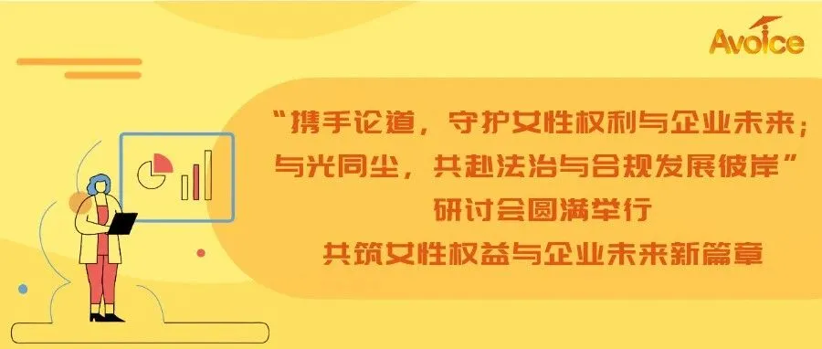


2025年1月4日，一场以“携手论道，守护女性权利与企业未来；与光同尘，共赴法治与合规发展彼岸” 为主题的研讨会在上海汉盛律师事务所圆满举行。此次研讨会由亚裔女性国际发展计划（AWDPI）、亚太青年企业家理事会（APEA）主办，旨在深入探讨女性权益保护、企业法治与合规发展的前沿议题，促进跨领域交流与合作。
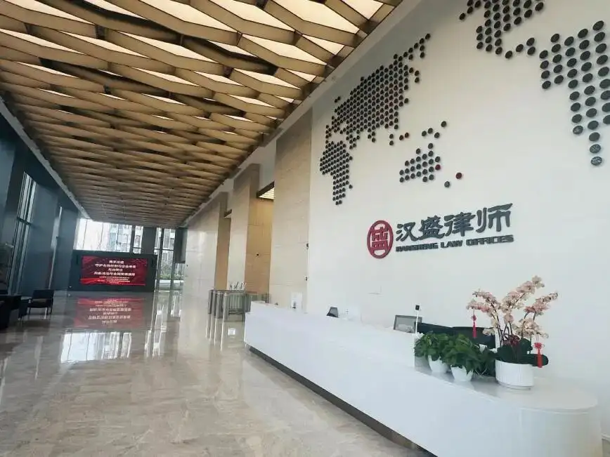
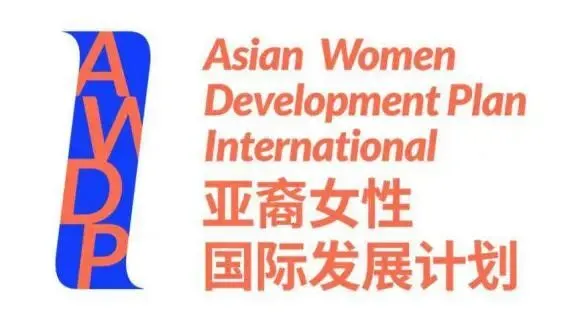
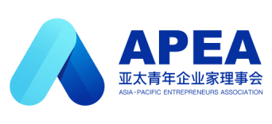
活动背景与筹备
在全球化与法治的深刻交织下，女性权益与企业发展的挑战已成为时代共同命题。随着国际关系和经济格局的变化，女性在社会与经济中的地位正发生深刻变革，家庭法与婚姻法在此过程中发挥着至关重要的作用。与此同时，中国企业在国际化发展中面临中美贸易摩擦和跨国法规的挑战，亟需解决合规风险，保持竞争力。为此，AWDPI亚裔女性国际发展计划及其APEA女性国际发展委员会发起此次研讨会，围绕“女性权益保护”和“企业法治与合规发展”展开讨论。通过深入分析家庭法与企业合规，活动旨在为与会者提供有价值的见解，推动社会公正与企业可持续发展，共同迈向更加光明的未来。
活
动
概
况
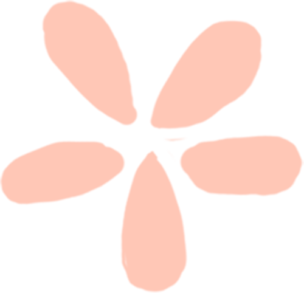
本次活动于2025年1月4日下午13:30顺利举行，吸引了60来位来自法律、企业、学术及社会各界的女性精英和专业人士。与会嘉宾围绕“女性权益保护”和“企业法治与合规发展”展开了深入讨论。刘彦辛律师分享了家庭法与婚姻法视角下的女性权益保障经验，李玉玲律师探讨了企业在国际法律环境中实现合规管理与可持续发展的策略 。与会者结合实践案例，提出了创新性见解和可行解决方案。此次研讨会为女性权益和企业法治合规提供了智力支持，促进了各领域的交流合作，取得了积极成果。
会议之初，AWDPI 发起人Yimar和APEA理事长分别上台发言，向与会嘉宾介绍了本次活动的主办方及其背景。Yimar首先介绍了 AWDPI（亚裔女性国际发展计划），该组织致力于消除针对海外亚裔女性的歧视与暴力，推动她们的赋能与发展。Yimar指出，AWDPI在欧洲、北美和亚太地区开展公益工作，并与联合国、各国政府及国际组织建立了广泛的合作网络，目标是为海外亚裔女性提供持续的保护与支持，助力她们在社会、经济、文化等方面的全面发展。
接着，理事长对APEA（亚太青年企业家理事会）进行了简要介绍。他表示，APEA作为亚太地区经济合作与发展的重要平台，致力于帮助青年企业家拓展国际市场，推动科技创新及跨文化合作，并积极推举优秀企业家参与APEC、G20等相关国际峰会。理事长强调，APEA与AWDPI的合作将为全球经济发展与社会进步注入更多活力和创新。
主
题
演
讲
01从家庭法及婚姻法角度
看女性国际发展及保护
上海汉盛律师事务所高级合伙人、上海市律协婚姻家事专业委员会委员、上海汉盛律师事务所家事与财富传承专业委员会执行主任刘彦辛律师，作为会议的重要发言人，发表了主题为“从家庭法及婚姻法角度看女性国际发展及保护”的演讲。
刘彦辛律师详细解读了对于家暴的应对措施，特别是如何通过司法手段保障女性和儿童的权益。作为家事与婚姻领域的资深律师，刘彦辛强调，家暴不仅是家庭内部问题，更关系到社会稳定和每个家庭成员的生活质量。
她指出，反家庭暴力相关法律的核心任务是保障受害者的人身安全。随着2022年10月30日《妇女权益保障法》的修订，人身安全保护令的适用范围得到了进一步扩展，适用阶段延展至恋爱、交友、终止恋爱关系、离婚之后等不同时期；适用范围从物理侵害的行为扩大至精神侵害的行为，极大地提高了对于妇女人身安全保护的可操作性，具有很强的现实意义。
刘律师通过两个案例进一步说明人身安全保护令的适用性。第一个案例涉及一对分手后情侣，女方遭男方暴力侵害和骚扰，最终法院签发保护令，禁止男方接近女方。第二个案例中，妻子长期遭丈夫暴力，尽管丈夫否认指控，但法院根据伤害照片和报警记录，认为存在较大的家暴可能性，最终签发了人身安全保护令。这些案例表明，法院在应对家暴时灵活运用法律工具，保障受害者的权益。
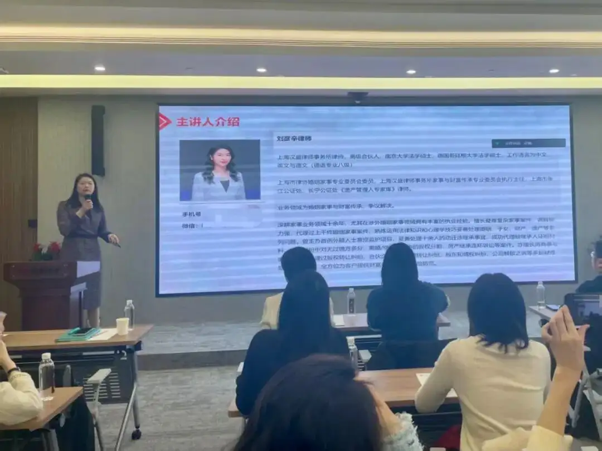
刘彦辛强调，尽管人身安全保护令的签发门槛没有以前高，但家暴案件的隐蔽性和受害者的无力反抗，仍使得一些案件未能有效解决。 她呼吁更多法律宣传与教育，帮助受害者识别暴力行为，保护自己。同时，她还提到，离婚案件中的子女抚养权和监护权常成为争议焦点，律师应结合孩子的最佳利益提出法律建议。
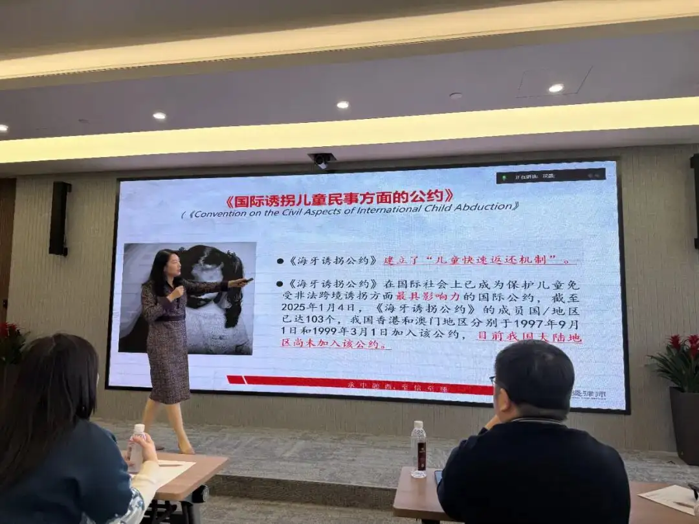
“愿你们余生所遇皆良人，被温柔相待。愿你们的孩子满眼是星光，被真爱温暖。”刘彦辛律师寄语道。随着法治建设的推进，反家庭暴力相关法律的不断完善，扩展了对受害者的保护范围，她表示将继续关注家暴案件，努力提升保护令的实施效果，确保更多受害者得到法律庇护。
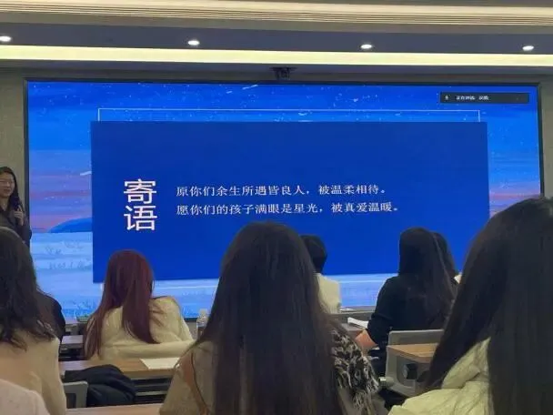
02中美贸易摩擦下的
出口管制与贸易制裁
AWDPI亚裔女性国际发展计划理事、汉盛律师事务所创始及管理合伙人李玉玲律师，在会议中发表了主题为“中美贸易摩擦下的出口管制与贸易制裁”的演讲。李律师详细阐述了美国对中国企业实施的制裁与出口管制政策，并探讨了中国企业在全球化背景下面临的跨国合规挑战以及中国反制裁法律框架的应对策略。
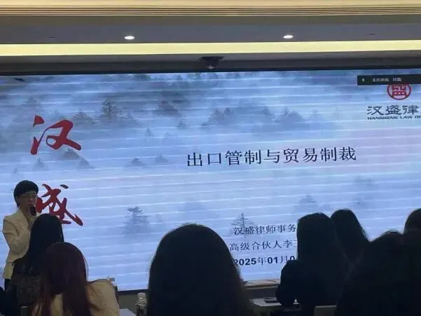
李律师指出，美国的制裁与出口管制政策对全球企业，尤其是高科技领域，产生了深远影响。通过“长臂管辖”，美国能对全球范围内的企业施加影响，特别是在半导体、通信技术等关键行业。李律师以中兴和华为为例，分析了出口管制如何影响全球供应链，并限制中国企业在某些市场中的进入。 这些政策对全球产业链的稳定性与竞争格局产生了重要影响。
在谈到制裁与出口管制的区别时，李律师强调，虽然两者常常交织，但它们在法律定义与执行机制上有所不同。出口管制主要针对特定技术或产品，旨在保护国家安全或经济利益，而制裁则涵盖更广泛的领域，包括金融、经济乃至文化层面。
李律师进一步指出，中国企业需在全球合规框架下经营，尤其是在面临外部制裁与出口管制的背景下，必须通过合法合规的手段应对国际市场的挑战。她还提到，汉盛律师事务所与多个国际事务所展开合作，为中国企业提供全球法律支持，帮助其应对跨国法律风险，确保合规性与竞争力。
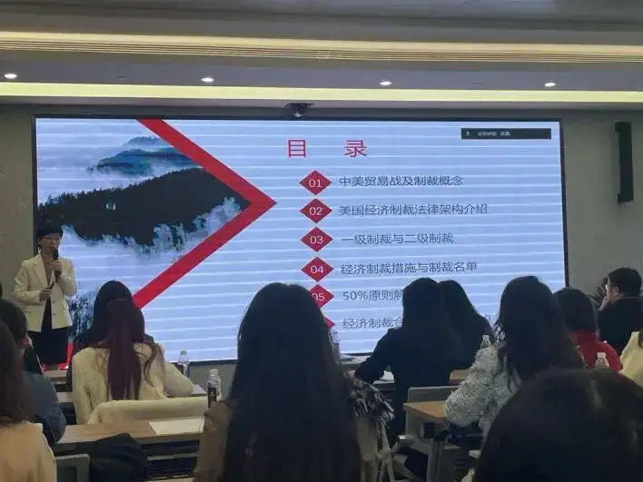
此外，李律师探讨了中国在应对外部制裁时所采取的反制裁法律措施。随着国际经济形势的变化，中国在保持开放的同时，逐步完善了反制裁的法律框架，这些措施不仅保护了国内企业的合法权益，也提升了中国在国际法律体系中的话语权。李律师强调，反制裁措施需要谨慎实施，以避免国际法律冲突。
最后，李律师提到，中国律师在国际法律事务中的参与日益增加，有效提升了中国在全球法律领域的影响力。她相信，在全球化进程中，中国法律的国际影响力将不断扩大，为中国企业的全球化发展提供更加坚实的法律支持。李玉玲律师的发言为与会人士提供了深刻见解，并为中国企业应对复杂国际法律环境提供了宝贵的法律建议。
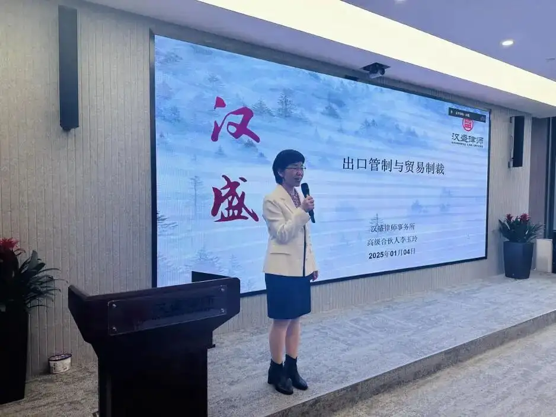
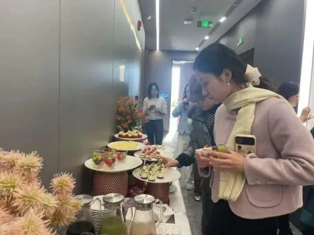
此次主题为“携手论道，守护女性权利与企业未来；与光同尘，共赴法治与合规发展彼岸”的研讨会圆满落幕，标志着女性权益保护与企业法治合规发展领域迈出了重要步伐。 研讨会为与会嘉宾提供了一个深入交流与探讨的平台，各领域专家分享了宝贵经验，推动了跨界合作。会议聚焦女性在全球法治体系中的权益保护，同时深入探讨了中国企业如何在复杂的国际法规中保持合规并实现可持续发展。
此次研讨会为女性权益保护与企业法治合规发展事业注入了新的动力。在全球化与法治环境不断变化的今天，社会对女性权益的关注与支持日益增强，企业对合规的重视也为其在国际竞争中奠定了基础。展望未来，女性权益保护将更加全面和有力，企业法治合规的发展将更加稳健。让我们携手共进，为建设更加公正、平等、可持续的社会贡献力量，共同迎接更加广阔的未来。
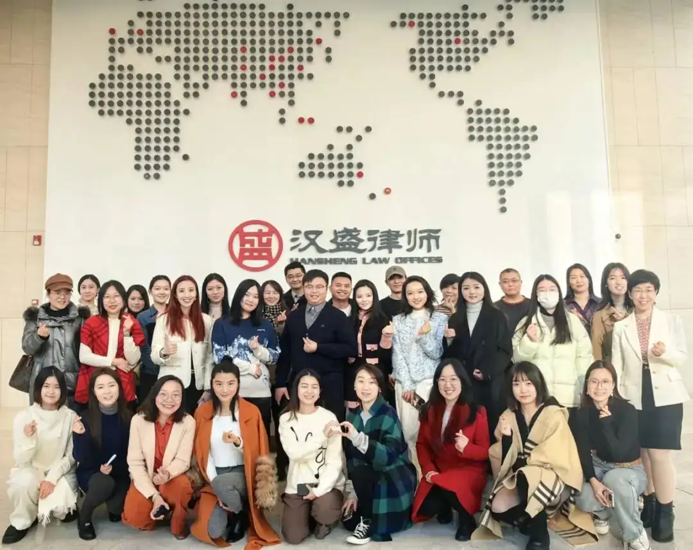
撰稿 | 何香莲
排版 | 王从容